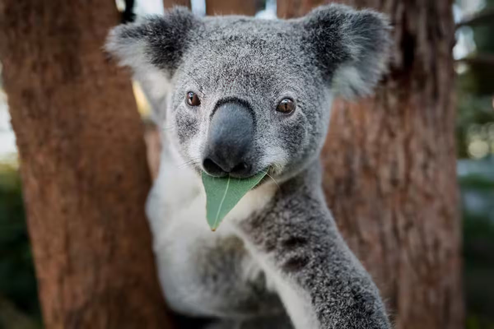

Koala Phascolarctos cinereus Koalas are native to Australia and are known for their distinctive appearance, with large, round ears, a short, pointed nose, and a thick, woolly coat. They are arboreal marsupials, spending most of their lives in trees, primarily eucalyptus trees.

Habitat
Koalas are found in the eastern and southeastern parts of Australia. Their preferred habitat includes eucalyptus forests and woodlands, where they find the leaves they eat and the trees they use for shelter and nesting.
Diet
Koalas have a specialized diet consisting almost exclusively of eucalyptus leaves. They are able to eat a wide variety of eucalyptus species, though they show a preference for certain types. They have a slow metabolism, allowing them to survive on a low-energy diet.
Conservation Status
Koalas are currently classified as vulnerable due to habitat loss, disease, and the impacts of climate change. Conservation efforts are underway to protect their habitats and ensure their survival. Key actions include habitat restoration, disease control, and legal protection of koala habitats.
How to Help
You can help protect koalas by supporting conservation organizations, participating in habitat restoration projects, and spreading awareness about the importance of protecting these unique animals. Consider donating to wildlife conservation groups or volunteering your time to help with local conservation efforts.
"Saving Australia's Endangered, Together for a Wilder Future"